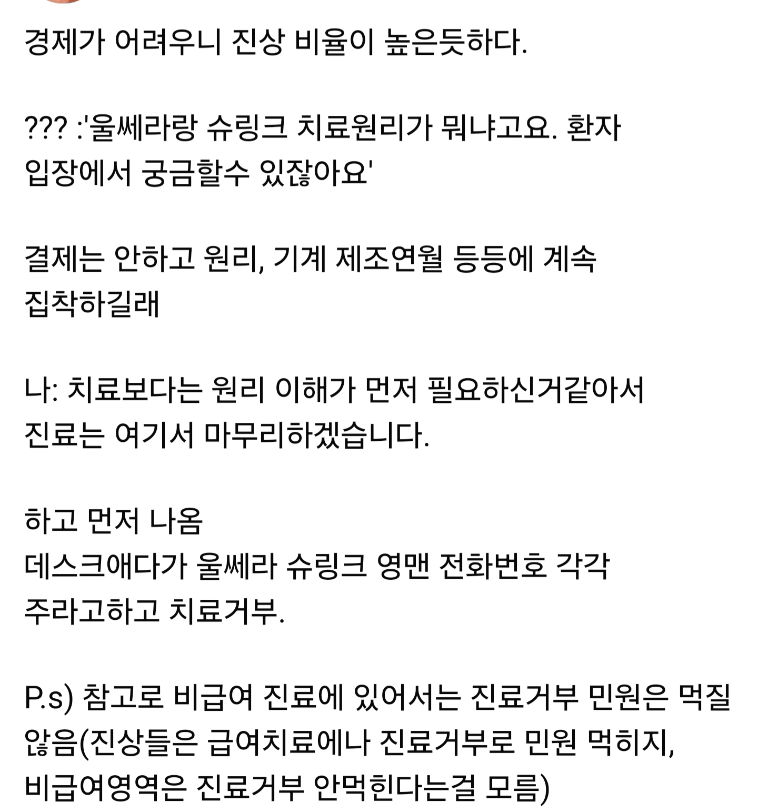

고객이 진상이다 vs 의사한테 저런것도 못 물어보냐

고객이 진상이다 vs 의사한테 저런것도 못 물어보냐
ㅋㅋㅋㅋㅋ 진심
"저게 왜 진상임? 내가 납득이 가게 설명해"
진상마인드ㅋㅋㅋㅋㅋ
보통 질문받고 화내는 사람은 자기가 잘 모르는데 권위 챙겨야하는 상황에서 화내더라
업종불문 다 똑같았음
직급좀 되고 회사 급좀 되고 업력 좀 길다 싶은 사람들 중 질문받고 화내는 사람들은 항상 핑계가 똑같음
귀찮은 진상이니 상대하기 싫어서 꺼지라고 그랬다
그런데 뒤에가서 알고보면 지가 모르는거라 대답 못해주는거 쪽팔리다고 윽박지르고 도망간거임ㅋㅋㅋ
예외를 본 적이 없어 ㅋㅋ
맞음 좆도모르니까 잘 알면 대충 이런거다 설명해줄수있지 다짜고짜 화내는새끼들은 10이면 10다 몰라서 그지랄함
저게 왜 진상임
저런거 물어보라고 상담실장, 코디네이터라는게 있고
없으면 의사한테라도 물어보는게 정상아님?
몇백만원짜리 시술 받으면서 저런 것도 못 물어보나보네
저건 그냥 서로 잘못한거 같은데?
레이저 싸개는 말은 해줄 수 있고
손놈은 시비조로 말한거 같은데
원리야 그렇다 치는데 기계 제조년월부터 그냥 개진상냄새 존나 나서 그런듯 ㅋㅋ
의사들 진짜 사람 깔보는거 심하더라
다그런건 아니겠지만
돈내고 진찰받는데 혼내는 경우도 더러있고
저번에 한번은 장염인지 배가 아파서 갔는데
아 제가 장염끼가 좀 있어서요
이러니까 진단은 제가 합니다 장염끼란 단어 쓰지마세요
표현만 하래
뭔말인진 대충 머리로는 이해해도 그걸 그렇게 말을 함
또 어떤 의사는
약을 매일 안드셨네요? 이러길래
그래도 꾸준히 먹었어요 까먹을때 빼구요 이랬더니
거봐 나는 거짓말하는 인간이 제일싫어
???
뭔가 이상한 사람 많이 봤음
좋은 사람도 보긴함
나도 대뜸 반말하는 의사봄 ㅋㅋ
그럼 왜 바로 안왔어요 / 증상이 있는데 왜 참다가 지금와요 / 그건 너가(지도 깨닫고 바로 고침) 환자분 생각이고…
이새끼 첨부터 존나시비조엿음 ㅋㅋ
그래서 바로나옴
선민의식 존나심함 의새년들
인터넷에 뭐 물어보면 아무설명안하면서 무조건 의사한테 가세요 이러는애들은 의새들이 유일할거다
사회성이 조또없음 ㄹㅇ 밖에서 등산하다가 만났는데 저지랄하면 절벽에서떨어짐
나는 왜 그런 의사 본적이없이 하루이벤트로 꿀잼일것같은데...
도파민 팍팍돌듯
니가 장(모름)염(증인지 모름)끼(?) 의사가 듣기에는 병신같은 소리를 해서 그럼
언어라는게 꼭 적확하게만 쓰이는게 아니다...
비의료인이 고객인 비즈니스에서(정작 의료 용어를 알아가서 대답해줘도 이새끼 진상이네라는 눈빛으로 볼거면서)
배도 살살 아프고 뭔가 꼬르륵거리기도 하고 배출할 때 설사처럼 나오고 하는 그 일련의 상태를 장염기가 있다라고 말한다는것도 모를 것 같으면 그건 의사고 환자고 이전에 한국인인가 아닌가의 문제지..
전에 아급성인 어쩌고 저쩌고 라고 말했다가 뭐 니가 의사냐 이런 눈빛으로 쳐다보는 의사분 만나고 그 뒤로는 그냥 한 2주쯤?된 장염끼?라고 함
잘나셨네 ㅋㅋㅋ
너 의사임?ㅋㅋㅋ
만약 의사라면 장비 없이 진료 볼수 있어?ㅋㅋㅋ
지들도 확률에 기반한 답변밖에 못하고 검사전엔 알지 못하면서 어딜 고객한테 훈수야 ㅋㅋㅋ
알지못하니까 하지말라는거고 맘에 안들면 딴데가 병신아 그리고 니가 내고객임?
원리 물어보는건 당연히 구매자가 물어볼 수 있다 싶은데.
근데 기계 제조년월은 왜 물어보는거지? 이건 좀....
신형 기계인거 찾아서 가고싶다면 이해 못할건 아닌데, 장비 신형인지 이런것도 아니고 제조년월을 물어보는건 좀 특이하네... 어디 팁으로 돌았나?
인터넷에 잇는 자기들끼리 공유사이트에서 저는~ 어쩌구저쩌구 이런병원에서 받앗다 이러니까 최신기계인지 구식인지 알아본거 아닐까?
저것도 나는 충분히 알권리라고는 생각함.
(물어본 대화의 방향은 어땟는지 모르지만, 써진대로만놓고보면 정당한거같음)
나도 mri찍는디 다 같은 건줄알앗더니 쫌 싼대서 찍으면 내가봐도 해상력이 구리더라.
그거가지고 다른병원 의사테 물어보니까 아 옛날기계들은 좀 이렇고 그래도 판독은 가능해요. 좋으면 더 좋죠. 이정도로 얘기해주긴했음.
저건 자기얼굴에 직접 효과를 보게하는거니 기계차이가 잇으면 걱정이될수도..?
글만 보고 걍 기계 제조년월 물어봄 < 은 뭐지 ? 싶었는데
신형장비인지 구형장비인지 물어보면 대충 좋은거라고 대답 뭉개거나 할 것 같으니까 확실하게 신형인지 아닌지 답변받는 방법(팁)이라고 생각하니까 맞는것 같아졌음ㅋㅋ
어차피 비급여고 < 고객 생돈 100% 면 물어볼 권리 있는게 맞는것 같고
손님 받으려고 영업 하는건 의사지 고객이 아니니까... 뭐, 고객 받을지 말지 권리도 의사한테 있긴 하겠지만
ㅋㅋㅋㅋㅋ그러네 서로 받을지 말지는 서로 권리네 ㅋㅋㅋ 의사도 비급여니까 가려받을수잇다고햇으니 퉁쳐
제조년월 중요하다고 하던데 오래되면 출력차이도 나고 같은 시술해도 효과 제대로 안나오는 경우도 많다더라
그래서 잘나가는 피부과는 일정주기로 기계 다 새걸로 바꾸는 걸로 알고있음
요새는 관련 커뮤나 카페같운데 정보많이 돌아서
장비 브랜드 뭔지 어떤방식 장비인지 이런거 알아보고 가라고 하던대? 리프팅은 모르겠고 남자수염 영구제모 알아보는데 무슨방식 레이져기계 쓰는지 알아보고 가라는 정보가 많움. 남자 제모도 저런대 여자시술은 오죽하겠어
어허 저건 의사가 아니라 미용싸개
결제는 안하고만 안 적혀도 나았을듯 그냥 돈으로 보는거같아
뭐 유난이라고 생각이 들 순 있는데 저게 그렇게까지 화낼일인가? 생각해보면 답 금방 나오지 사실 걍 알면 대답해주면 되잖아 나중에 뒷담을까든뭘하든ㅋㅋ 대답을 못하겠으니까 화내는거 아닌가?
시술전에 무슨 시술인지 물어보는게 진상인가..;
밴대로 비급여고 서비스 받는 입장이면 큰돈 들어가는데 자세한 서비스 내용에 대해서 알고싶을수도있는거지...
의사들 선민의식 ㅈ된다니까
걍 지도 잘모르는거 물어보니까 삐진것같음
쌔한 사람은 쳐내는게 맞긴 한데, 똑같이 쳐내도 좀 에둘러서 잘 쳐내야지 대응도 ㅈ같이 해놓고선 글까지 올려서 셀프 폐업 수순 밟는건 뭔지...
전문의가 아니라서 잘 몰랐나보지
그냥 좀 쎄해서 쳐낸거같은데 ㅋㅋㅋㅋㅅㅂ 돈에눈먼 피부과 의사들이 저걸 놓칠리가없는데 저럴정도면 ㅋㅋ
말투가 기분나빠서 그런거같음
슈링크 원리가 어렵지 않아서 설명못하는건 절대아님
그냥 상담하는 언냐들도 알 정도로 쉬움
대형병원도 아니고 미용병원의사면 어느정도 서비스직도 겹쳐있는거라 그런가보다~하고 대답해주면되지ㅋㅋ
선민의식이지.
약 가격 같은거 물어봐도 피식대면서 조롱하듯 얘기하는 의사들도 있잖아.
그딴건 데스크에나 묻지 감히 나한테? 하는.
전에 대학병원에서 상담 받는데 진료 토요일에 가능하냐고 물으니까 어이없다는 듯 피식 쪼개는 의사 새끼 있었다. ㅋㅋ
대학병원 첨가서 주말은 쉬시는지 몰랐습니다 죄송합니다 하늘 같은 의사님.....ㅜㅜ
질문하는 말투가 개 좆같았나?
그랬다면 그 위주로 얘기를 해야지
당연히 비싼돈 내고 맞는건데 집착좀 할 수 있는거 아니냐
좆같이 얘기하지 않았다는 가정 하에
좆같은 말투라도 얘기는 해줘야지
잉 내가 간 피부과원장님은 한마디 물어보니까 시술간 원리랑 차의점 신나서 삼십분동안 강의하던데
원장님 제발 그만.. 시술받고 싶어요… 생각하면서 하품 존⃫나⃫ 참음
요즘 피부과는 어떤 기계인지 몇년도인지 원래 민감해지고 기계설비도 공개해야함..
댓글보면
진상인 놈들이 꼭 자기 진상 아니라고하는게 똑같네
이젠 이게 왜 진상임?
해명하셈 하는 마인드도 레퍼토리처럼 그대로라 진짜 욕나오네